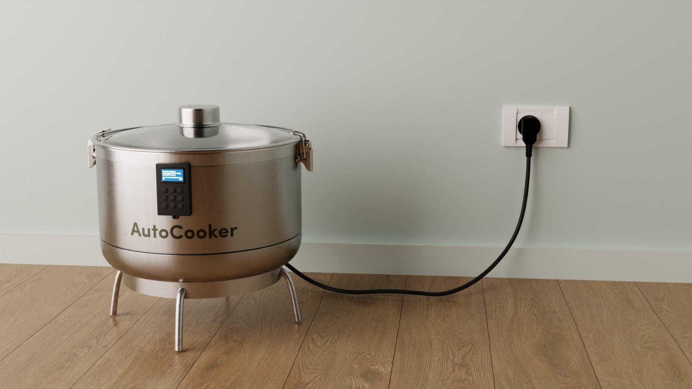
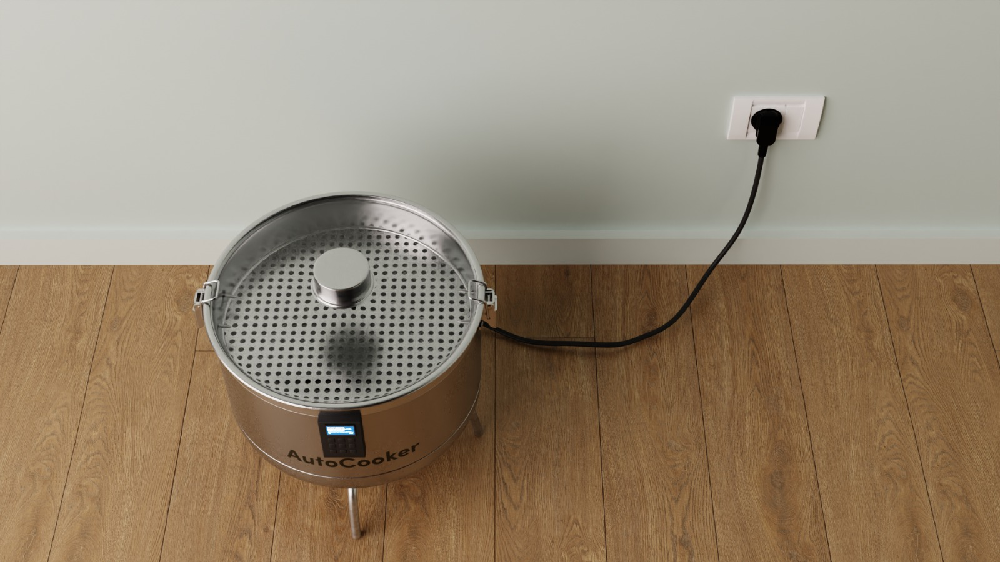
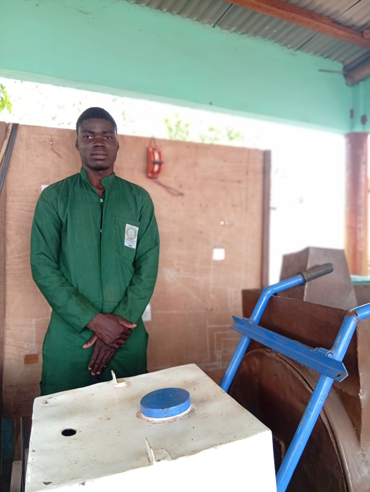
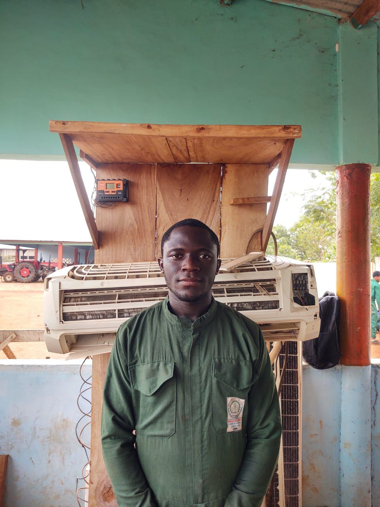
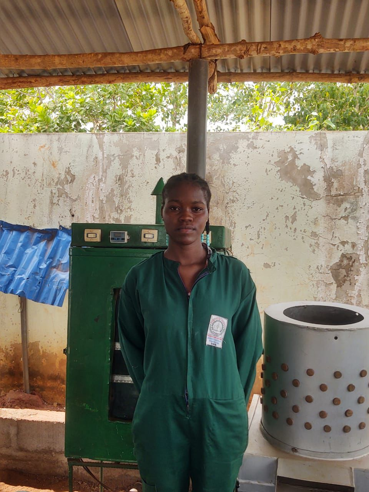
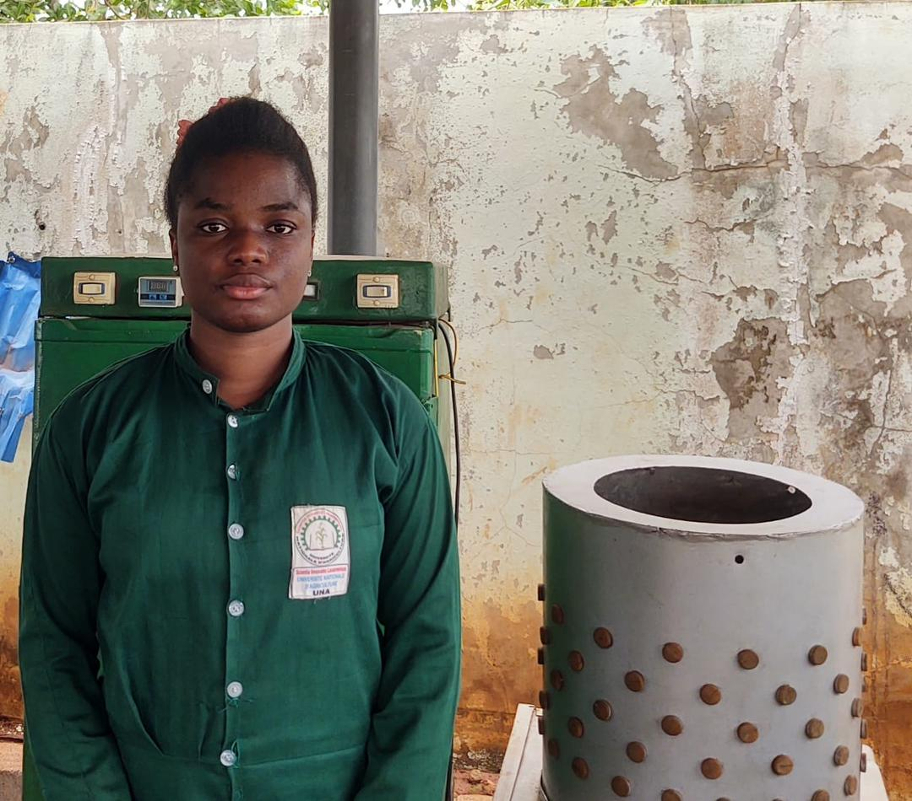
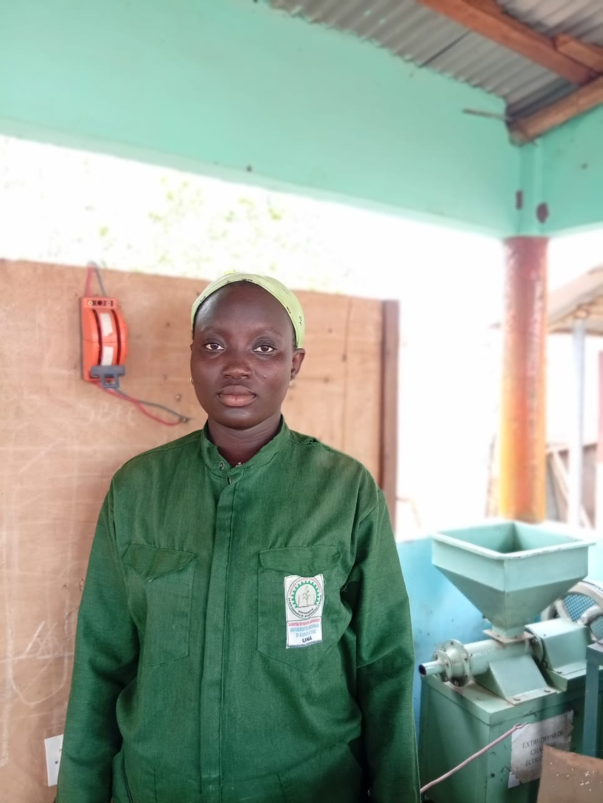
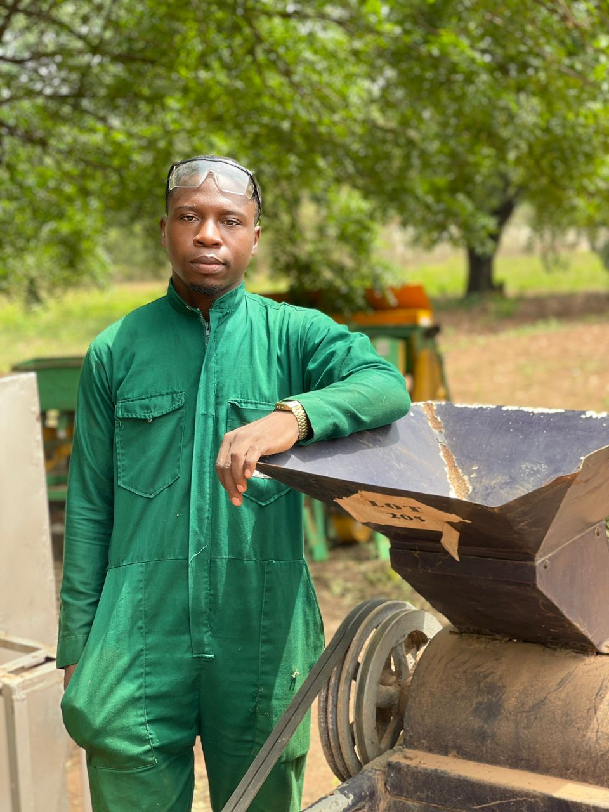
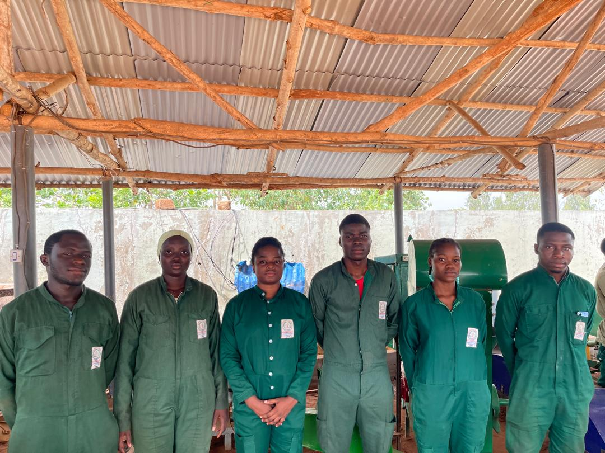

Steam Cooker is an intelligent electric steam cooking system developed by students of the National University of Agriculture (UNA), Benin, to modernise traditional cereal-based food processing while protecting forests and improving women’s working conditions.
Support our project![[PHOTO TRADITIONAL COOKING – WOMEN COOKING WITH WOOD]](images/OIP.webp)
In Benin, artisanal cereal processing is a major pillar of the local food system. More than 90% of actors in this value chain are women producing and selling steamed foods such as Ablo, Ablah, Lèlè, Com and Wassa-wassa.
Traditional steam cooking relies exclusively on firewood or charcoal. This causes deforestation, greenhouse gas emissions and serious health risks due to smoke exposure. Biomass represents more than 60% of national energy consumption and more than 80% of households in sub-Saharan Africa still depend on wood for cooking.
Lack of temperature control leads to uneven cooking, variable product quality and economic losses. While firewood suppliers benefit from the system, women traders bear the health and economic risks.


Steam Cooker is an intelligent electric steam cooking machine inspired by the simplicity of a rice cooker and specifically designed for traditional local foods. It automatically regulates temperature to ensure clean, even and energy-efficient cooking.
The solution modernises traditional practices without changing recipes or cultural characteristics. It is compatible with future solar integration.
Steam Cooker est un cuiseur vapeur électrique intelligent conçu pour remplacer la cuisson traditionnelle au bois utilisée dans la préparation de l’Ablo et d’autres aliments vapeur. Il s’agit d’un système simple, sécurisé et économe en énergie qui permet de produire une vapeur contrôlée grâce à un dispositif de régulation automatique de la température. L’appareil intègre une résistance électrique optimisée, un capteur thermique et un module de contrôle qui maintient une température stable tout au long du processus de cuisson. Cette stabilité garantit une cuisson homogène, réduit les pertes et améliore la qualité finale du produit. Steam Cooker diminue fortement la dépendance au bois de chauffage, réduit les émissions de fumée et protège la santé des utilisatrices, majoritairement des femmes. Il améliore également la productivité en réduisant le temps de cuisson et en assurant des résultats constants à chaque cycle. Conçu pour être accessible, robuste et adaptable, le système peut évoluer vers une alimentation solaire et être utilisé pour d’autres produits traditionnels cuits à la vapeur. Steam Cooker constitue ainsi une solution concrète, durable et adaptée aux réalités locales pour moderniser la transformation alimentaire artisanale.
Women vendors consume approximately 15–25 kg of firewood per day. The pilot phase can avoid 1 to 1.5 tons of wood over six months. On a larger scale, this significantly reduces pressure on forests, limits deforestation and improves local air quality.
Steam Cooker improves cooking stability and food safety by ensuring controlled and reproducible temperature conditions. This improves product quality, reduces waste and strengthens consumer trust. Cultural preferences and traditional recipes are fully preserved.
The project directly targets women processors. It reduces exposure to smoke and heat, improves productivity and supports income stability. In the long term, it can create jobs in equipment manufacturing, maintenance and training.
The system is based on locally available components and simple technology. It can be replicated in other municipalities of the Plateau Department and later across Benin. If each vendor saves 20 kg of wood per day, this represents around 120 tons of wood saved per year.







“We want to reduce women’s workload while protecting our forests.”
![[PARTNER LOGO]](images/una.jpg)
![[PARTNER LOGO]](images/egr.jpg)
![[PARTNER LOGO]](images/ag.PNG)
![[PARTNER LOGO]](images/be.jpg)
Would you like to support Steam Cooker, collaborate with us or learn more about the project?